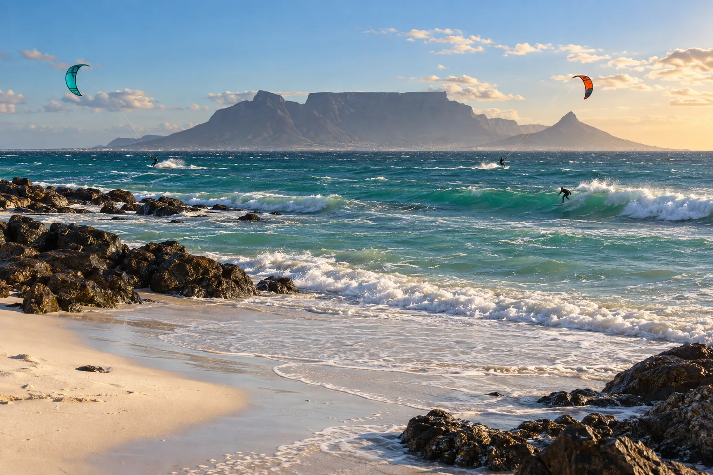

Big Bay
Bloubergstrand, Afrique du Sud · kitesurf, surf, windsurf

Plage face à la montagne de la Table, mythique pour le kite dans les vagues. Le vent du sud-est y souffle fort l’été.
- Lieu
- Bloubergstrand, Afrique du Sud
- Niveau
- Intermédiaire
- Activités
- kitesurf, surf, windsurf
- Type d'eau
- Mer / océan
- Coordonnées
- -33.80, 18.45 (position approximative du secteur)
Dangers à connaître
- Eau très froide.
- Vent fort et rafaleux.
Le conseil d'Ocean Buddy
L’eau du Benguela est froide : une 4/3 minimum même en été.
Ouvrir dans Ocean Buddy Télécharger sur l'App Store
Source : Fiche Ocean Buddy · septembre 2026 · à vérifier localement.